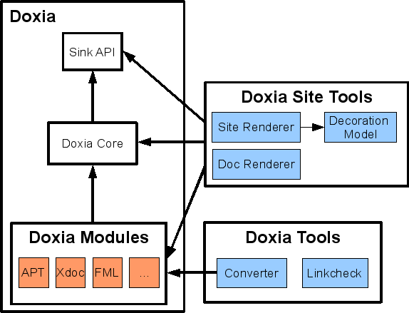

Overview Of The Doxia Framework
The following figure represents the main components of the Doxia Framework.

Note: Just like Maven, Doxia uses Plexus extensively.
Sink API
The Sink interface is a generic markup language interface. It contains several methods that encapsulate common text syntax. A start tag is denoted by xxxx() method and a end of tag by xxxx_() method.
For instance, you could do things like:
sink.paragraph();
sink.text( "my text" );
sink.paragraph_();
similar to this HTML markup:
<p>my text</p>
To find out more about the Sink API, you could read the Javadoc here.
Doxia Core
The Core is the API to parse a source and populate it in a Sink object. The Parser interface contains only one method:
void parse( Reader source, Sink sink )
throws ParseException;
The ParseException class has the responsibility to catch all parsing exceptions. It provides an helper method, getLineNumber(), which helps to find where an error occurred.
The AbstractParser class is an abstract implementation of the Parser. It provides a macro mechanism to give dynamic functionalities for the parsing. For more information on macros, read the Doxia Macro Guide.
Finally, the SiteModule interface is the last part of the puzzle. It provides main definitions of a given Doxia module and it is used by the doxia-site-renderer site tools.
Doxia Modules
A Doxia module is an implementation of a given markup language like APT or Xdoc. Each module should implement these interfaces:
-
Parser interface, more specifically the AbstractParser class
-
SiteModule interface
Several modules provide also a Sink implementation to handle a specific output markup language.
For more information on modules, read the Doxia Module Guide.
Doxia Site Tools
The Site Tools are a collection of tools to renderer an output. The main tool used by Maven, specifically the Maven Site Plugin, is the doxia-site-renderer which renders in HTML any documents written with supported markup syntax. It uses Velocity templates to customize the renderer and the site-decoration-model tool to decorate the renderer. This component describes the layout of the site defined in the site.xml file.
The doxia-doc-renderer tool is used to renderer any document in another document.